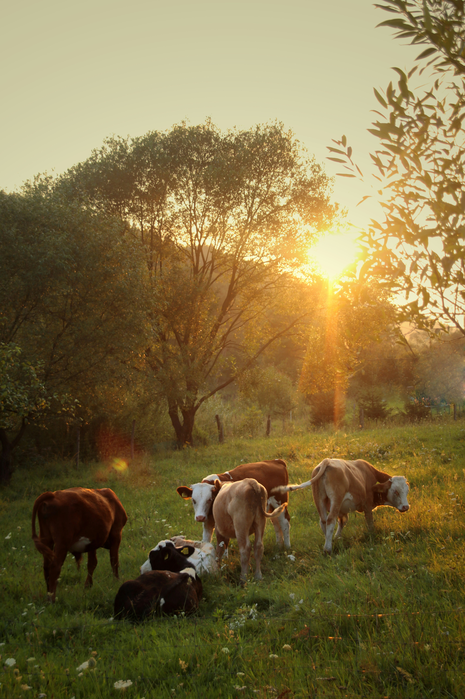
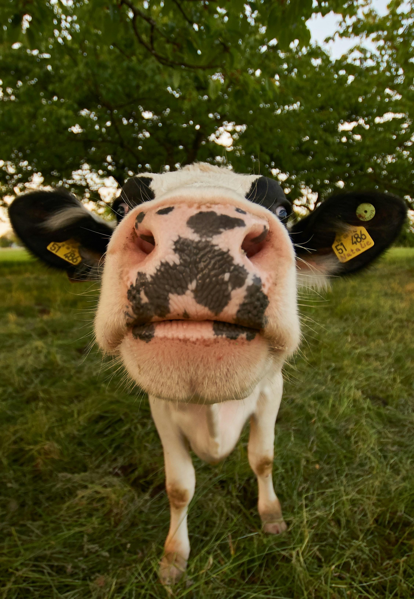
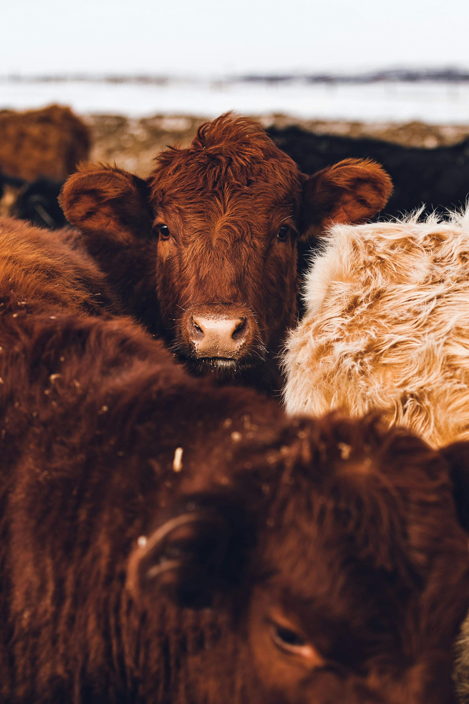

Moo Point
Mooo-ve over, other pets!
This is your ultimate online destination for all things cows. Whether you're a farmer, an enthusiast, or simply someone who adores these gentle giants, we're thrilled to have you join our community.

This is your ultimate online destination for all things cows. Whether you're a farmer, an enthusiast, or simply someone who adores these gentle giants, we're thrilled to have you join our community.

Where do cows get their medicine? The farm-acy.

Cows don't text; they just moo-ve on.

What do you call an emo cow? Moooooo-dy.

Why do cows have bells? Their horns don't work.
"Cows are amongst the gentlest of breathing creatures; none show more passionate tenderness to their young when deprived of them; and, in short, I am not ashamed to profess a deep love for these quiet creatures"
Stop staring at this page and just sign in already, you're making us nervous.